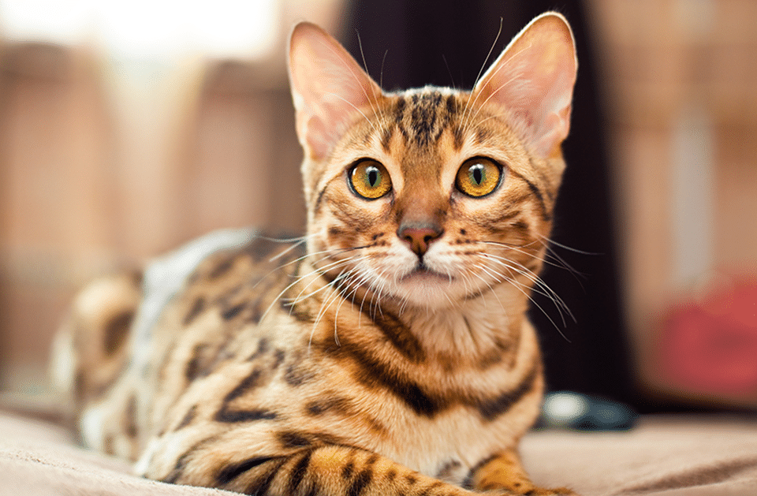

Luna
Luna é uma gata encantadora, com pelo preto e branco, olhos verdes hipnotizantes e uma personalidade cativante. Ela é afetuosa, brincalhona e uma caçadora habilidosa.

Luna é uma gata encantadora, com pelo preto e branco, olhos verdes hipnotizantes e uma personalidade cativante. Ela é afetuosa, brincalhona e uma caçadora habilidosa.